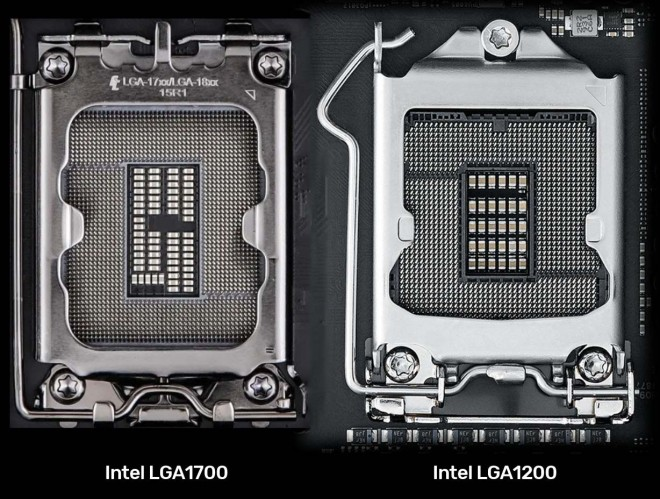

Le socket CPU est un réceptacle à processeur
La plupart des sockets et des processeurs actuels
sont construits autour de l’architecture en matrice de broche
(PGA).
VOIR ZIF
On en trouve aussi connectés sur un
slot,
en matrice de pastilles
(LGA)
ou encore en matrice de billes, généralement soudés à la carte
(BGA)

Il faut différencier les architectures
En savoir plus à propos des sockets